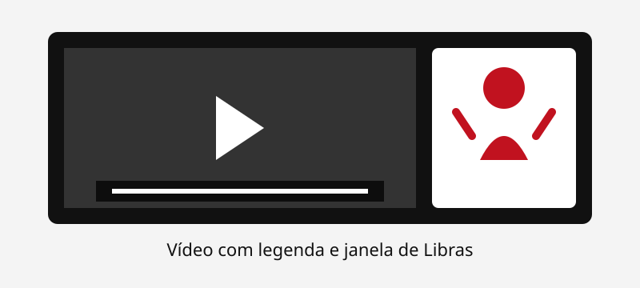

Comunicação acessível: muitas formas de dizer a mesma coisa
Libras, legendas, braille, audiodescrição e linguagem simples garantem que a informação chegue a quem precisa dela.

Libras é uma língua, não mímica
A Língua Brasileira de Sinais foi reconhecida como meio legal de comunicação pela Lei 10.436, de 2002, e regulamentada pelo Decreto 5.626, de 2005. Ela tem gramática própria, com estrutura diferente da do português, e variações regionais, como qualquer língua.
Para muitas pessoas surdas, a Libras é a primeira língua e o português é a segunda. Por isso, apenas legendar um vídeo nem sempre é suficiente: a janela com intérprete garante o acesso a quem se comunica principalmente em sinais. Este site, por exemplo, oferece o tradutor VLibras, ferramenta gratuita do Governo Federal, no botão azul no canto da tela.
Legendas e transcrições
Há diferença entre a legenda comum, que traduz apenas as falas, e a legenda para surdos e ensurdecidos, que também indica sons importantes, como “[telefone tocando]” ou “[música tensa]”. Para áudios e podcasts, uma transcrição em texto cumpre o mesmo papel e ainda ajuda quem prefere ler, quem está em um lugar barulhento e os mecanismos de busca.
Audiodescrição
A audiodescrição narra, nos intervalos entre as falas, o que está acontecendo na imagem: cenário, expressões, ações e textos que aparecem na tela. Ela é essencial para pessoas cegas ou com baixa visão em filmes, peças de teatro, eventos e até em fotos publicadas nas redes sociais.
Nas redes sociais
Ao publicar uma imagem, use o campo de texto alternativo da plataforma ou escreva uma breve descrição na legenda. Muita gente adota a hashtag #PraCegoVer para sinalizar que a imagem foi descrita.
Braille e informação tátil
O sistema braille representa letras, números e sinais por combinações de até seis pontos em relevo. Ele aparece em botões de elevador, embalagens de remédios, cardápios e placas. Para quem lê braille, essa informação dá autonomia para tarefas simples, como saber em qual andar está ou qual é a dose de um medicamento.
Linguagem simples
Escrever de forma clara também é acessibilidade. Frases curtas, palavras do dia a dia, a informação principal logo no começo e explicação para termos técnicos ajudam pessoas com deficiência intelectual, idosos, pessoas com pouca escolaridade e qualquer leitor com pressa. Vários órgãos públicos brasileiros já adotam programas de linguagem simples em documentos e serviços.